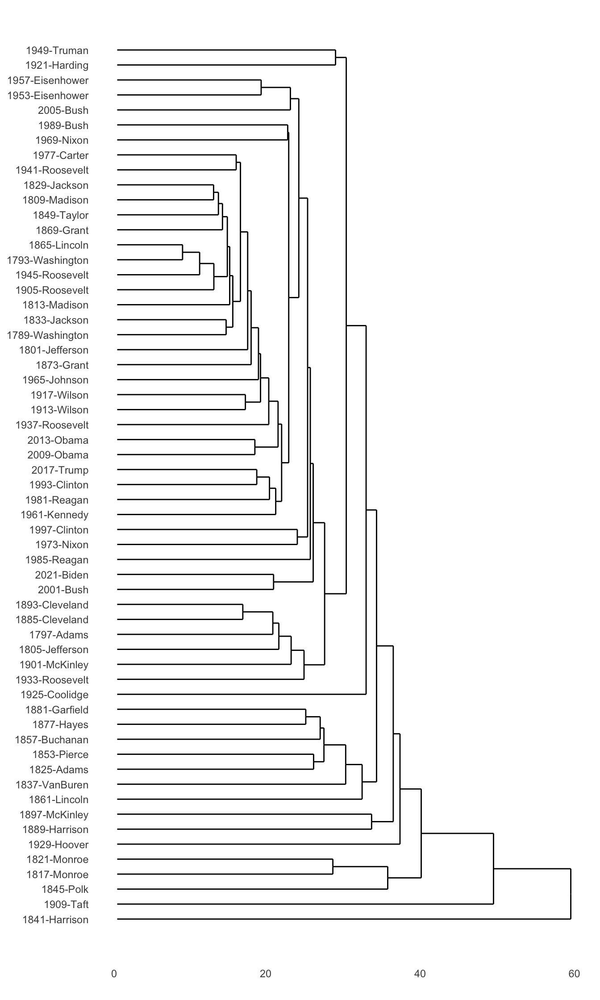
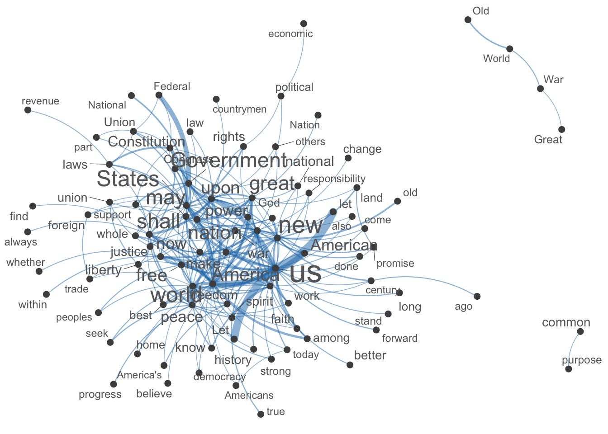

Chapter 4 Corpus Analysis: A Start
In this chapter, I will demonstrate how to do basic corpus analysis after you have collected data. I will show you some of the most common ways that people work with the text data.
4.1 Installing quanteda
To start with, this tutorial will use a powerful package, quanteda, for managing and analyzing textual data in R. You may refer to the official documentation of the package for more detail.
quanteda is not included in the default R installation. Please install the package if you haven’t done so.
Also, as noted on the quanteda documentation, because this library compiles some C++ and Fortran source code, you will need to have installed the appropriate compilers.
- If you are using a Windows platform, this means you will need also to install the Rtools software available from CRAN.
- If you are using macOS, you should install the macOS tools.
If you run into any installation errors, please go to the official documentation page for additional assistance.
4.2 Building a corpus from character vector
To demonstrate a typical corpus analytic example with texts, I will be using a pre-loaded corpus that comes with the quanteda package, data_corpus_inaugural. This is a corpus of US presidential inaugural address texts, and metadata for the corpus from 1789 to present.
## Corpus consisting of 58 documents and 4 docvars.
## 1789-Washington :
## "Fellow-Citizens of the Senate and of the House of Representa..."
##
## 1793-Washington :
## "Fellow citizens, I am again called upon by the voice of my c..."
##
## 1797-Adams :
## "When it was first perceived, in early times, that no middle ..."
##
## 1801-Jefferson :
## "Friends and Fellow Citizens: Called upon to undertake the du..."
##
## 1805-Jefferson :
## "Proceeding, fellow citizens, to that qualification which the..."
##
## 1809-Madison :
## "Unwilling to depart from examples of the most revered author..."
##
## [ reached max_ndoc ... 52 more documents ]## [1] "corpus"We create a corpus() object with the pre-loaded corpus in quanteda– data_corpus_inaugural:
After the corpus is loaded, we can use summary() to get the metadata of each text in the corpus, including word types and tokens as well. This allows us to have a quick look at the size of the addressess made by all presidents.
require(ggplot2)
corp_us %>%
summary %>%
ggplot(aes(x = Year, y = Tokens, group = 1)) +
geom_line() +
geom_point() +
theme_bw()
Exercise 4.1 Could you reproduce the above line plot and add information of President to the plot as labels of the dots?
ggplot2::geom_text() or more advanced one, ggrepel::geom_text_repel()

4.3 Keyword-in-Context (KWIC)
Keyword-in-Context (KWIC), or concordances, are the most frequently used method in corpus linguistics. The idea is very intuitive: we get to know more about the semantics of a word by examing how it is being used in a wider context.
We can use kwic() to perform a search for a word and retrieve its concordances from the corpus:
kwic() returns a data frame, which can be easily output to a CSV file for later use.
Please note that kwic(), when taking a corpus object as the argument, will automatically tokenizethe corpus data and do the keyword-in-context search on a word basis. In other words, the pattern you look for cannot be a linguistic pattern across several words. We will talk about how to extract constructions later.
4.4 KWIC with Regular Expressions
For more complex searches, we can use regular expressions as well in kwic(). For example, if you want to include terror and all its other related word forms, such as terrorist, terrorism, terrors, you can do a regular expression search.
By default, the kwic() is word-based. If you like to look up a multiword combination, use phrase():
It should be noted that the output of kwic includes not only the concordances (i.e., preceding/subsequent co-texts + the keyword), but also the sources of the texts for each concordance line. This would be extremely convenient if you need to refer back to the original discourse context of the concordance line.
kwic() search.

4.5 Tidy Text Format of the Corpus
So far our corpus is a corpus object defined in quanteda. In most of the R standard packages, people normally follow the using tidy data principles to make handling data easier and more effective. As described by Hadley Wickham (Wickham and Grolemund 2017), tidy data has a specific structure:
- Each variable is a column
- Each observation is a row
- Each type of observational unit is a table
With text data like a corpus, we can also define the tidy text format as being a data.frame with one-token-per-row. A token is a meaningful unit of text, such as a word that we are interested in using for analysis, and tokenization is the process of splitting text into tokens.
In computational text analytics, the token (i.e., each row in the data frame) is most often a single word, but can also be an n-gram, sentence, or paragraph. The tidytext package in R is made for the handling of the tidy text format of the corpus data.
Tidy datasets allow manipulation with a standard set of tidy tools, including popular packages such as dplyr, tidyr, and ggplot2.
The tidytext package includes functions to tidy() objects from quanteda.
library(tidytext)
corp_us_tidy <- tidy(corp_us) # convert `corpus` to `data.frame`
class(corp_us_tidy)## [1] "tbl_df" "tbl" "data.frame"4.6 Frequency Lists
To get a frequency list of words, word tokenization is an important step for corpus analysis because words are a meaningful linguistic unit in language. Also, word frequency lists are often indicative of many important messages.
The tidytext provides a powerful function, unnest_tokens() to tokenize a data frame with larger linguistic units (e.g., texts) into one with smaller units (e.g., words).
corp_us_words <- corp_us_tidy %>%
unnest_tokens(output = word, input = text, token = "words") # tokenize the `text` column into `word`
corp_us_words
The unnest_tokens() is optimized for English tokenization of other linguistic units, such as words, ngrams, sentences, lines, and paragraphs (check ?unnest_tokens()). To handle Chinese data, however, we need to define own ways of tokenization unnest_tokens(…, token = …). We will discuss the principles for Chinese text processing in a later chapter.
Now we can count the word frequencies:
Frequency lists can be generated for bigrams or any other multiword combinations as well:
corp_us_bigrams <- corp_us_tidy %>%
unnest_tokens(bigram, text, token = "ngrams", n = 2)
corp_us_bigramsTo create bigram frequency list:
## [1] 135562## [1] 1355044.7 Word Cloud
With frequency data, we can visualize important words in the corpus with a Word Cloud. It is a novel but intuitive visual representation of text data. It allows us to quickly perceive the most prominent words from a large collection of texts.
library(wordcloud)
set.seed(123)
with(corp_us_words_freq, wordcloud(word, n,
max.words = 400,
min.freq = 10,
scale = c(2,0.5),
color = brewer.pal(8, "Dark2"),
vfont=c("serif","plain")))tidytext, there is a preloaded data frame, stop_words, which contains common English stop words. Please make use of this data frame and try to re-create a word cloud with all stopwords removed. (Criteria: Frequency >= 10; Max Number of Words Plotted = 400)

wordcloud2, and re-create a word cloud as Exercise 4.3 but in a fancier format, i.e., a star-shaped one. (Criteria: Frequency >= 15)
4.8 Collocations
With unigram and bigram frequencies of the corpus, we can further examine the collocations within the corpus. Collocation refers to a frequent phenomenon where two words tend to co-occur very often in use. This co-occurrence is defined statistically by their lexical associations.
4.8.1 Cooccurrence Table and Observed Frequencies
Cooccurrence frequency data for a word pair, w1 and w2, are often organized in a contingency table extracted from a corpus, as shown in Figure 4.1. The cell counts of this contingency table are called the observed frequencies O11, O12, O21, and O22.
Figure 4.1: Cooccurrence Freqeucny Table
The sum of all four observed frequencies (called the sample size N) is equal to the total number of bigrams extracted from the corpus. R1 and R2 are the row totals of the observed contingency table, while C1 and C2 are the corresponding column totals. The row and column totals are also called marginal frequencies, being written in the margins of the table, and O11 is called the joint frequency.
4.8.2 Expected Frequencies
Equations for all association measures are given in terms of the observed frequencies, marginal frequencies, and the expected frequencies E11, …, E22 (under the null hypothesis that W1 and W2 are statistically independent). The expected frequencies can easily be computed from the marginal frequencies as shown in Figure 4.2.
Figure 4.2: Computing Expected Frequencies
4.8.3 Association Measures
The idea of lexical assoication is to measure how much the observed frequencies deviate from the expected. Some of the metrics (e.g., t-statistic, MI) consider only the joint frequency deviation (i.e., O11), while others (e.g., G2, a.k.a Log Likelihood Ratio)consider the deviations of ALL cells.
Here I would like to show you how we can compute the most common two asssociation metrics for all the bigrams found in the corpus–t-test statistic and Mutual Information (MI).
- \(t = \frac{O_{11}-E_{11}}{\sqrt{E_{11}}}\)
- \(MI = log_2\frac{O_{11}}{E_{11}}\)
- Log-Likelohood Ratio (LLR) \(= 2 \sum_{ij}{O_{ij}log\frac{O_{ij}}{E_{ij}}}\)
corp_us_collocations <- corp_us_bigrams_freq %>%
filter(n > 5) %>% # set bigram frequency cut-off
rename(O11 = n) %>%
tidyr::separate(bigram, c("w1", "w2")) %>% # split bigrams into two columns
mutate(R1 = corp_us_words_freq$n[match(w1, corp_us_words_freq$word)],
C1 = corp_us_words_freq$n[match(w2, corp_us_words_freq$word)]) %>% # retrieve w1 w2 unigram freq
mutate(E11 = (R1*C1)/sum(O11)) %>% # compute expected freq of bigrams
mutate(MI = log2(O11/E11),
t = (O11 - E11)/sqrt(E11)) %>% # compute associations
arrange(desc(MI)) # sorting
corp_us_collocationsPlease note that in the above example, we compute the lexical associations for bigrams whose frequency > 5. This is necessary in collocation studies because bigrams of very low frequency would not be informative even though its association can be very strong.
How to compute lexical assoications is a non-trivial issue. There are many more ways to compute the association strengths between two words. Please refer to Stefan Evert’s site for a very comprehensive review of lexical assoication meaasures.
corp_us_collocations according to the t-score and compare the results sorted by MI scores.
corp_us_collocations, which gives the Log-Likelihood Ratios of all the bigrams.
When you do the above exercise, you may run into a couple of problems:
-
Some of the bigrams have
NaNvalues in their LLR. This may be due to the issue ofNAs produced by integer overflow. Please solve this. -
After solving the above overflow issue, you may still have a few bigrams with
NaNin their LLR, which may be due to the computation of thelogvalue. In Math,log(1/0)= Infandlog(0/1) = -Inf. Do you know when you would get an undefined valueNaNin the computation oflog()?
Exercise 4.7
Find the top FIVE bigrams ranked according to MI values for each president. The result would be a data frame as shown below.
- Create a plot as shown below to visualize your results.

References
Wickham, Hadley, and Garrett Grolemund. 2017. R for Data Science: Import, Tidy, Transform, Visualize, and Model Data. 1st ed. O’Reilly Media, Inc.